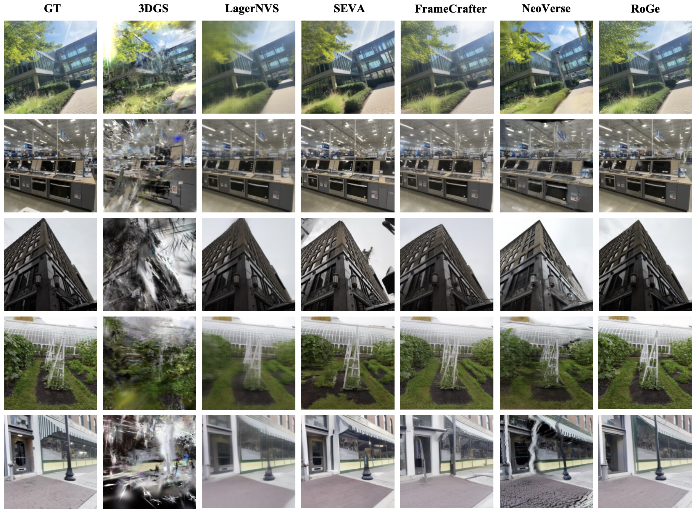
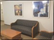
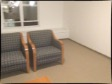
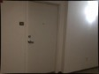
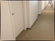
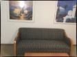
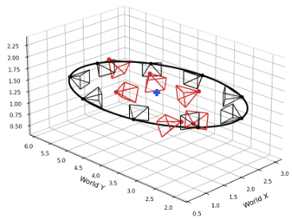
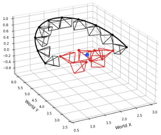
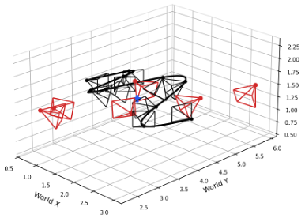

Novel view synthesis from sparse inputs requires both geometric grounding from the observed views and generative priors of unobserved regions, motivating recent hybrid methods that combine reconstruction and generation. However, existing methods bridge the two with rendered images or explicit 3D representations such as point maps or 3D Gaussians. Generation is thus conditioned on a lossy and imperfect projection of the scene, inheriting its errors, and reconstruction receives no signal from generation to correct them. We present RoGe, an end-to-end unified reconstruction and generation framework that removes this explicit bridge. It targets roaming within a scene anchored by sparse views: given a few posed images and a camera trajectory, it synthesizes a temporally coherent video along that trajectory. From the sparse input views, RoGe builds an implicit scene representation with a feed-forward reconstruction model, and queries it with target camera rays to obtain per-view geometric features. These features are injected into a video diffusion model as conditioning, without any 3D intermediate. Both modules are trained jointly, so the generation objective directly shapes its own geometric conditioning. We conduct experiments on DL3DV, where RoGe outperforms reconstruction-based, generation-based, and hybrid baselines on image-level metrics and video-level temporal consistency. Ablations confirm that ray-queried implicit features outperform both raw reconstruction tokens and rendered RGB as conditioning, and that joint training brings further gains.

Sparse context views (left) with target trajectories (top) and synthesized novel-view videos (bottom).
Sparse context views (left) with target trajectories (top) and synthesized novel-view videos (bottom).








@article{lang2026roge,
title={RoGe: Novel View Synthesis via End-to-End Implicit Reconstruction and Generation},
author={Lang, Xiaolei and Kang, Ze and Huang, Zehao and Wang, Naiyan},
journal={arXiv preprint arXiv:2609.02847},
year={2026}
}